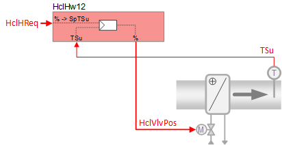
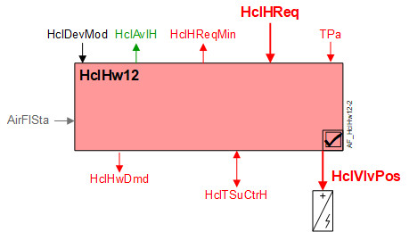

Hot water heating coil with supply air temperature control (HclHw12)
 | This application function operates the control valve for a heating coil. The request signal for heating (from the room controller) is transformed into supply air temperature setpoint and is provided to the own PID controller for cascaded supply air temperature control. The valve position results from the output of the PID-controller. |
Required elements and how to configure them:
Element | I/O | Signal type |
|---|---|---|
HclVlvPos "Heating coil valve position" | On-board output, Heating coil valve position | Water any signal type |
TSu "Supply air temperature" | On-board input, Supply air temperature | any signal type |
Function
The figure below shows BACnet objects associated with this application function. Primary signal flow is summarized as follows:
Heating coil heating request (HclHReq) is received and processed into the output signal for heating coil valve position (HclVlvPos).
Basic function: Accept request signal from associated room controller and map it to appropriate control setpoint; Compare setpoint to present value of supply air temperature sensor; Pass result through a device mode logic switch prior to outputting as a command to the object that controls the device.

| Command or request (or related) |
| Notification of condition or status, or availability |
| Device mode |
| Interlock (internal signal, not a BACnet object; see Interlocks section for additional information) |


Interlocks
Room automation interlocks are internal signals that coordinate interaction between HVAC devices. They are not visible in ABT Site or web interface, but parameters associated with them are. See comment column for hints on parameters that affect interlock functionality.
Signal | Type | Direction | Description | Comment |
|---|---|---|---|---|
AirFlHReq | Boolean | Out | Air flow heating request | See Configuration section for parameters named "...AirFlHReq". |
AirFlSta | Boolean | In | Air flow status | Parameter EnMonAirFlSta must = Yes. See Configuration section for additional information. |
Sequence
Hot water valve modulation: In response to heating demand, the heating valve is modulated to control the room temperature at setpoint. In response to external triggers for special modes such as warm-up, cool down, or safety conditions, the heating valve may be set to off or fully open.
Cascaded supply air temperature control: The heating demand signal (HclHReq) from room temperature PID is mapped to a setpoint value for supply air temperature (HclSpTSuH), and used as input to the cascaded supply air temperature PID located in this AF. The supply air PID compares the setpoint value to the present value of the supply air temperature sensor, and any difference is used to increase or decrease the analog output signal to the command object.
If the supply air temperature sensor is not valid, temperature control is performed by the room temperature PID.
Device mode: The input signal for device mode is a multistate value.
HclDevMod supports the following states:
- Off
- Control mode (modulation)
- Fully open
Heating available status: When the heating coil is available for heating, the binary output signal for "Heating coil available for heating" (HclAvlH) will be "Yes" (available). HclAvlH is used by the system to regulate heating resources. For example, if there is a call for heating but the heating coil is not available because it is already at maximum capacity (because device mode is fully open), then HclAvlH will signal "No" and the next available heating resource in the temperature control sequence will be activated.
For heating available status to be "Yes", device mode must equal "Control mode" (modulation).
Supply chain interface, HwDmd: The output signal for hot water demand is a multistate value.
HclHwDmd supports the following states:
- Off (no demand signal)
- Heating demand (demand signal is active)
- Warm-up (Hot water demand is initiated when plant operating mode is set to warm-up)
The following figure(s) illustrates control modulation and related functions.

Supply Air Coordination: Additional setpoint logic is possible if a central function with HVAC capability is present and connected to the room segment controller. If enabled, this central function makes available the TPa object (primary air temperature from the air handling unit), allowing for dynamic adjustments to the minimum supply air temperature setpoint. For additional information see
- SpTSuHMin
- TPa object: CenFnct11 ->SplyAir11
Configuration
 Parameters
Parameters
Description | Parameter | Default value |
|---|---|---|
|
Supply air temperature setpoints | ||
Maximum supply air temperature setpoint for heating | SpTSuHMax | 32 [°C] |
Minimum supply air temperature setpoint for heating If an HVAC supply air central function is connected, the plant will limit the minimum supply air temperature setpoint to the greater of:
If there is no Central Function present, the setpoint minimum will always be SpTSuHMin. | SpTSuHMin | 16 [°C] |
Supply air temperature setpoint heating differential to room setpoint | DiffSpTSuHSpR | 10 [K] |
Interlocks | ||
Switch-on point for air volume flow heating request | SwiOnAirFlHReq | 4 [%] |
Hysteresis for air volume flow heating request | HysAirFlHReq | 2 [%] |
Switch-on delay for air volume flow heating request | DlyOnAirFlHReq | 30 [s] |
Enable monitoring for air volume flow state 0:No | EnMonAirFlSta | 1:Yes |
Hot water demand | ||
Switch-on point for hot water demand | SwiOnPtHwDmd | 4 [%] |
Hysteresis for hot water demand | HysHwDmd | 2 [%] |
Internal settings – do not change | ||
Temperature unit | TUnit | [°C] |
Temperature difference unit | TDiffUnit | [K] |
Interface
Interface | Description | Type | Ref. | Owned by |
|---|---|---|---|---|
HclVlvPos | Heating coil valve position | AO | ◉ | Room segment / Device |
HclSpTSuH | Heating coil supply air temperature setpoint for heating | APrcVal | ● | - |
HclDevMod | Heating coil device mode 1:Off | MPrcVal | ● | - |
HclTSuCtrH | Supply air temperature controller heating for heating coil | Controller | ● | - |
HclHReq | Heating coil heating request | ACalcVal | ● | - |
HclHReqMin | Heating coil heating request minimum | ACalcVal | ● | - |
HclAvlH | Heating coil available for heating 0:No | BCalcVal | ● | - |
HclHwDmd | Heating coil hot water demand 1:Off | MCalcVal | ● | - |
HclSplyHw | Heating coil supply chain for hot water | GrpMbr | ● | Room segment |
Engineering and commissioning
Parameter EnMonAirFlSta (Enable monitoring for air volume flow state) must be set to 1: Yes. This is the default setting for HclHw12 (unlike HclHw11 where this setting is optional). It is important to understand that this setting is NOT optional for HclHw12.